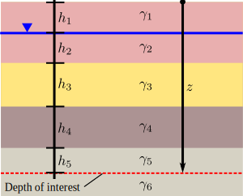

We learned how to calculate the relative density of soils.
We learned how to calculate
optimum water contents and density
after compaction.
We learned about technical specifications and quality control of compaction.
We have accomplish objective 1.
Contents
Suction and capillary action.
Swelling/shrinkage in soils.
Frost action in soils.
Total stress, pore pressure, and effective stress.
Objectives covered in this lecture
[O2]: Develop an understanding of the importance of groundwater and seepage and its role in evaluating the effective stress in soils
After this lecture we will able to:
Calculate suction caused by capillary rise and approximate its height.
Calculate the swelling and frost susceptibility of soils.
Calculate pore pressure, total, and effective stresses.
Water in hydrostatic conditions
In hydrostatic conditions, pore water pressure (\(u\) ) is controlled by the ground water table (GWT) elevation.
If the soil is fully dry \(u=0\)
If the soil is partially saturated \(u<0\). Suction is generated by the water surface tension and pore size.
Below the GWT \(u \geq 0\).
Capillary rise
Capillarity arises from surface tension\(T\) that occurs at the interface between water and soil particles.
Surface tension will form a water meniscus.
Inter-particle contact force increases.
The meniscus radii is function of the shape and size of the pore space which is empirically equal to 20% of \(D_{10}\)
Simplifying the soil's pore structure as tubes will help us to obtain mathematical expressions to understand capillarity.
\(h_c\): Is the height of the water column that rises in a tube of diameter \(d\) above the GWT because of water surface tension \(T\).
\( h_c=\cfrac{4T}{\gamma_w d_t} \)
Quiz 4.1
In which of the soils below will the capillary rise be greater ?
A loose poorly graded gravel
A loose well graded gravel
A dense well graded gravel
A dense poorly graded gravel
Example 4.1
Using the tube analogy what will be the capillary rise in a uniform loose sand with \(d=0.15\)mm and in a clay with \(D_{10}=1.5 \mu\)m. Assume the pore size is 20% of \(D_{10}\).
Suction pressure
Due to the surface tension and capillary rise, the water column above the GWT must be in tension. This generates the suction that helps holding particles together.
Negative pore water pressure
\(u_c= -h_c \gamma_w=\cfrac{-2T}{r_m}\)
\(r_m=\) radius of water meniscus
Quiz 4.2
Select the zone in the beach profile with excellent bearing capacity.
Example 4.2
Calculate the capillarity water pressure for the same soils of Example 4.1.
Capillarity explains shrinkage
Recall that the menisci radii and pressure are related as \(u_c \ \alpha \ 1/r\).
Thus, reducing the water content should make the space between particles shrink and \(r_m\) decrease.
Menisci tension and wall rigidity balance. No further shrinkage of pore space occurs.
Swelling potential
When water is added back to the soil, water meniscus are broken and the soil swells. Clay mineralogy plays a significant role on how much a soil will expand.
Swelling can be measured as a potential for volume expansion or as the stress required to prevent the expansion.
Swelling potential
: Measures the capacity of the soil to swell freely. Is the ratio of the change of volume of the soil over its initial state before water is added.
\( S_P= \cfrac{\Delta V}{V_0} \times 100 \)
: Measures how much pressure a soil can produce when it can not swell due to a imposed load.
\(\sigma_S= F/A_c\)
swelling and activity relationship
Quiz 4.3
For the data of example 2.7 (\(C_F=5.5\%\) and \(A=1.81\)) what is its estimated swelling potential?
\(S_P<1.5\%\) Low
\(1.5 \leq S_P<5\%\) Medium
\(5 \leq S_P<25\%\) High
\(S_P \geq 25\%\) Very high
Frost action
Anytime the ambient temperature falls below 0\(^o\) C (32 \(^o\)F) the pore water can freeze. Frost action can have important consequences such as uneven heaving that can affect light-weight structures.
Three ingredients are needed for frost action action to occur:
Temperatures below freezing.
High water table.
Frost susceptible soils.
Frost action
Frost susceptible soils
There are several tools to determine soil's frost susceptibility. For example, the Canadian Department of Transport had use the limits proposed by Armstrong and Csathy (1963).
Group
Frost susceptibility
Soils
I
None
Gravel, sand, gravelly tills
II
Moderate
Fine clay ( \(C_F>40\%\))
III
Strong
Silt, coarse clay (\(C_F\) 15-25%), silty tills
Frost penetration depth
Example 4.3
Determine the frost susceptibility of the soil in Example 2.7.
The soil is some to frost susceptible
Principle of effective stress
According to the Principle of effective stresses the stress that produces the deformation of the soil skeleton is transmitted through the particle contacts and is equal to the total stress\(\sigma\) minus the pore water pressure\(u\).
\(\sigma'=\sigma - u\)
In (1925) Karl Terzaghi proposed a new concept that profoundly impacted the field of Geotechnics: The principle of effective stresses.
Note: The principle of effective stresses only applies for dry and fully saturated soils. For partially saturated soils the pressure of the gases entrapped in the soil must be considered.
Principle of effective stress
In-situ vertical stresses
Is the state of stress in the field as they are previous to any change in the loading conditions in the subsurface.
\(\sigma_v\): Is the sum of all vertical stresses above a depth of interest in the subsurface.
\(u\):
\( u=\gamma_w h_w\)
Multilayer profiles

The total vertical stress at depth \(z\) is:
\(\sigma_v=\sum_{i=1}^n \gamma_i h_i\)
\(n=\) number of interfaces below the ground surface including the water table.
\(\sigma'_v\):
\(\sigma'_v= \sigma_v -u \)
Example 4.4
Compute the total and effective vertical stresses at point A. Plot the vertical total and effective stresses with the pore pressure profile in the same graph.
Quiz 4.4
For the soil profile shown below, which stress profile plot is correct?
Horizontal stresses
Horizontal effective stresses are calculated based on the capacity of the soil to deform laterally. When soil doesn't deform laterally it is in at-rest conditions.
\(K_0\): Is the ratio of the effectivehorizontal stress \(\sigma'_h\) to the effective vertical stress \(\sigma'_v\).
\(K_0=\cfrac{\sigma'_h}{\sigma'_v}\)
\(K_0\) only applies for horizontal surface conditions and only toeffective stresses
Note: We will learn how to calculate \(K_0\) in the last module of this course. We will also talk more about in-situ stresses and pore pressure in the context of state of stresses in soils.
\(\sigma_h\): The total horizontal stress can be calculated using the effective stress principle.
\(\sigma_h= \sigma'_h+ u\)
Example 4.5
Compute the total and effective horizontal stress at point A. Plot the horizontal total and effective stresses with the pore pressure profile in the same graph.
Quiz 4.5
What is the effect of lowering the ground water table on the effective vertical stresses?
It is similar to loading the soil
It is similar to unloading the soil
It doesn't affect the soil
Example 4.6
What is the effect of lowering the GWT 3 ft on the effective vertical stresses for the soil profile in Example 4.4. What if the GWT is at the surface?